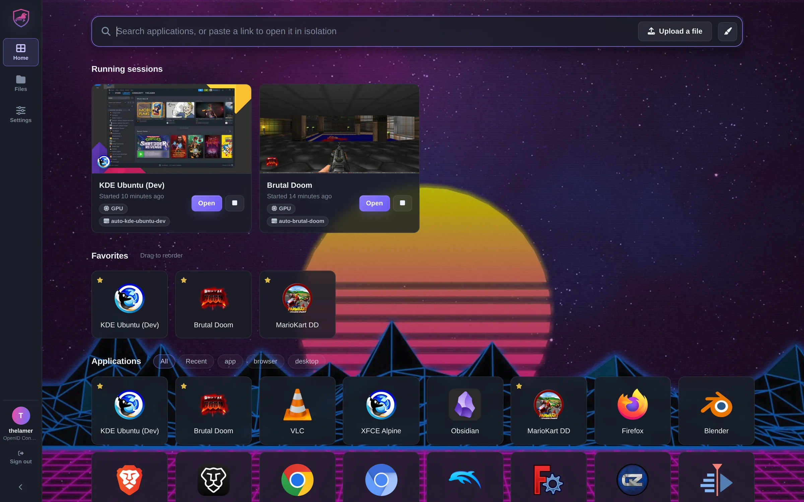
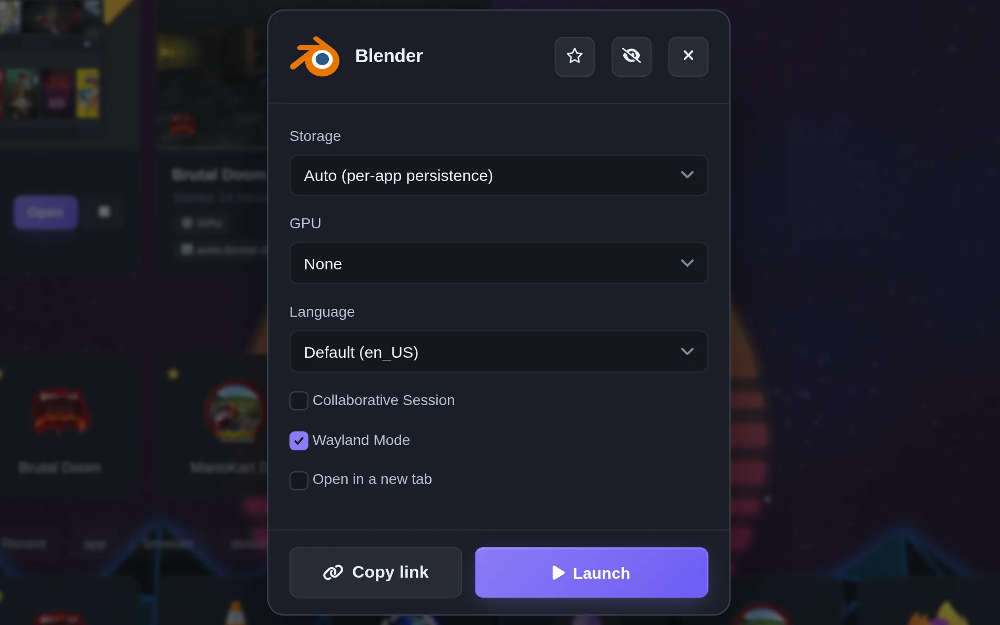
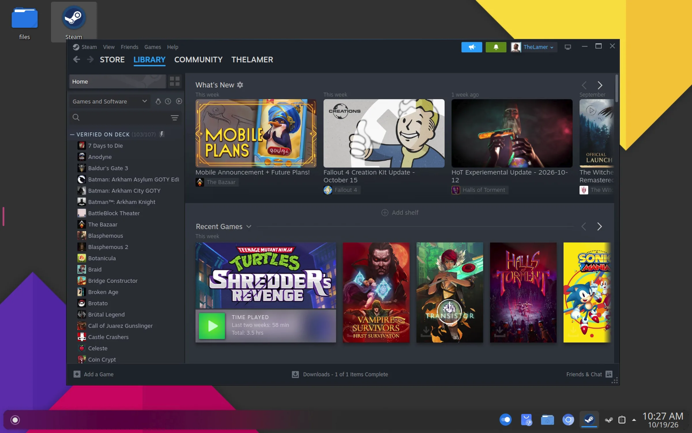
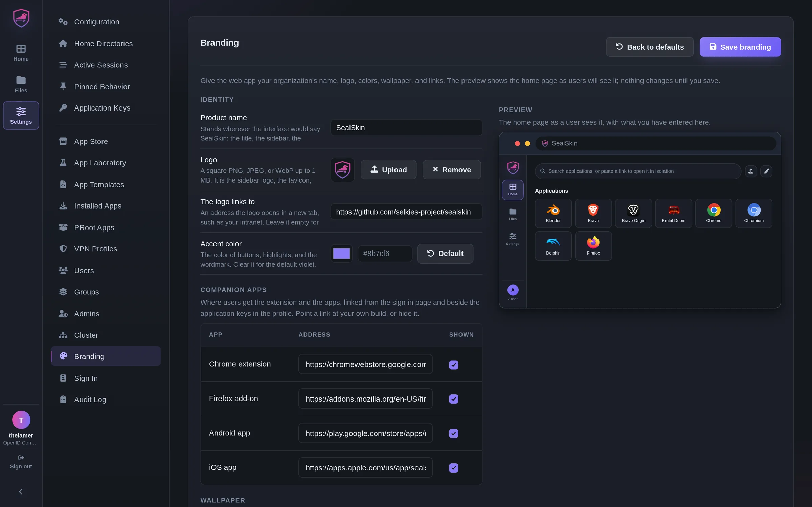

Isolation
Links, files, downloads, and searches open in a fresh container. Cleanroom sessions leave nothing behind; persistent home directories keep what you choose.
SealSkin runs desktop applications in isolated containers on a server you control and streams them to any browser or phone. Links, files, and downloads open there instead of on the device in front of you, so nothing from the web ever runs locally.

One container on a Linux host with Docker, one manifest on Kubernetes, or several nodes as a cluster. The installer gets you a trusted certificate through Duck DNS.
Open the server's address in any browser. Sign in with the root key, or with the identity provider or reverse proxy you already have. Add the extension or the phone app with a key you make on the web.
Pick an application and launch it. Right-click a link, send a download, drop a file: it opens in a fresh container on the server, streamed to your tab. Close it and nothing is left behind, or keep a home directory.
Launching
A tile opens its launch options: a home directory that persists or a cleanroom that vanishes, a GPU, a VPN exit, the language, a collaboration room, and on a cluster the pool or node. The options are remembered per application, so the next launch is one click.
Copy link gives the application a pinned address with those options in it. Bookmark it, put it on a phone's home screen, or install it from the browser as an app of its own, and it lands straight in a desktop.

Get SealSkin
Deploy the server on your hardware, then connect from a browser, the extension, or the phone app.
Ships as the linuxserver/sealskin container, and as a Python wheel on every release.
The quickest path to a working server with a trusted certificate. It needs Docker, a free Duck DNS subdomain, and its token.
The script creates the directories, obtains a Let's Encrypt wildcard certificate, writes a compose file, and starts the stack.
With a certificate of your own, or to start with the self-signed one the container generates.
The container must be named sealskin and needs the Docker socket: every session is a container it starts. Getting Started explains each line.
One manifest installs the server in any namespace you administer, with no cluster-scoped objects. Every session runs as a pod beside it.
GPUs, pod templates, resource quotas, and pull secrets are honored. See Kubernetes in the docs.
https://<server>:8443/, sign in with the root key the first start wrote to config/root_key, and install your first application from the dashboard.
Every release also carries the extension zips, the APK, the IPA, and the server wheel for sideloading.
The catalog
Browsers, office suites, IDEs, media editors, emulators, 3D tools, and full desktops from the LinuxServer.io catalog. Add any Selkies-compatible image of your own, hand users a PRoot Apps catalog, or build custom launchers in the App Laboratory.
What it does
A session is a container on your server. Your device only ever shows pixels.
Links, files, downloads, and searches open in a fresh container. Cleanroom sessions leave nothing behind; persistent home directories keep what you choose.
The web app is the launcher, the file manager, and the admin pages, with nothing installed. Every application has a pinned address you can bookmark or put on a home screen.
OpenID Connect, SAML, or the reverse proxy in front: Authelia, Authentik, Keycloak, Pocket ID, Tinyauth, oauth2-proxy, with guides for SWAG, Traefik, Nginx Proxy Manager, and Caddy. Groups carry permissions and limits.
The extension adds the right-click menu and download interception; the phone apps add native file sharing. Both sign in with an application key made on the web, shown as text or a QR code.
A file manager, chunked uploads, intercepted downloads, and password-protected share links. A download never touches your disk.
Launch any app into a room with chat, voice and video, gamepad slots, and hand-over of mouse and keyboard. Guests need no account.
NVIDIA, Intel, and AMD acceleration with zero-copy encoding straight from GPU memory, on a Wayland compositor in userspace or on an X server whose screen lives on the GPU. H.264, H.265, VP8, VP9, or AV1 at up to 240 frames per second.
Import WireGuard or OpenVPN profiles. A user picks one at launch and the session leaves through that tunnel and nothing else, on Docker and on Kubernetes.
Nodes join into a cluster with shared users and applications and no master: pools, placement, GPU slots, and home directories that move between nodes. The records are files, or an S3 bucket in place of a database.
One manifest installs the server in any namespace, with no cluster-scoped objects. Every session is a pod beside it, with GPUs, quotas, and pull secrets honored.
Pull through mirrors and proxies, sign in to private registries, and serve stores, logos, and catalogs from internal hosts. A deployment without internet access runs on these alone.
Clients talk to your server and nothing else. An end-to-end encrypted API for the key-file clients, a sign-in cookie that never reaches a session, a published threat model, and no telemetry.
How it works
One server container holds the API and a Caddy proxy. Sessions are Selkies-based application containers on the same network, or pods in the same namespace, reachable only through the proxy after it has asked the API whether the request may pass.
| Web sign-in | Application key | Key file | |
|---|---|---|---|
| Clients | The web app at the server's address | The extension and the phone app, as companions of the web app | The extension and the phone app with a configuration file |
| Who you are | The root key, an identity provider, or a reverse proxy says | A key you made in the web app names you | Your RSA key signs every request |
| Transport | HTTPS with a trusted certificate | HTTPS with a trusted certificate | HTTPS, or encrypted payloads over plain HTTP |
| Reaches | Every node of a cluster | Every node of a cluster | The one server the file names |
The extension and the phone app are thin shells. The launcher, dashboard, file manager, and rooms are served by your server, so interface updates never wait for a store review. Architecture and Signing in have the details.
Any application
One tile can be Firefox; another can be a full KDE, XFCE, MATE, or i3 desktop on Ubuntu, Debian, Fedora, Arch, Alpine, or Kali, with Steam, Blender, or an IDE inside it and a GPU behind it. It fills the browser tab, follows the window when it resizes, and is reachable from a phone.
The home directory is a folder on your server, so the desktop is exactly as you left it from any device, and the files you send from the launcher are already on its desktop.

Streaming
Traditional remote desktops struggle with corporate firewalls and NAT traversal. Selkies streams over plain WebSockets on port 443, so a session works anywhere a web page loads, with WebRTC as an opt-in transport when you want it. No VPN and no dedicated client.
The video is H.264, H.265, VP8, VP9, or AV1, encoded by NVENC on NVIDIA, VA-API on Intel and AMD, or in software where there is no GPU, at up to 240 frames per second, with 10-bit and full-color modes and a sharp still frame painted over the video when nothing moves. Clipboard both ways, audio, microphone, webcam, printing, file transfer, gamepads, a second screen, and a gaming mode that holds the pointer and keyboard, in Chromium, Firefox, and Safari.
Together
Launch any application into a collaboration room and invite people with a link. Participants chat, talk, and see each other; the host hands the mouse and keyboard to one of them, maps gamepad slots to players for couch co-op over the web, and swaps the room to another application without ending it.
Viewers get a read-only login of their own, tokens travel in the URL fragment where no log sees them, and no third-party relay is involved: everyone connects to your server.

Performance
By default a session runs a Wayland compositor in userspace, built on Smithay. Pixelflux, the Rust capture and encoding engine behind Selkies, takes the compositor's buffers straight from GPU memory on NVIDIA, Intel, and AMD and hands them to the hardware encoder.
X11 takes the same path. The images carry a build of XLibre's Xvfb patched so the screen itself lives on the GPU: Pixelflux captures it through DRI3, or through NvFBC on NVIDIA's X driver, and the encoder waits on a GPU semaphore rather than the CPU for each frame. Wayland is the default and the better fit for most applications; desktops that only run on X11, and applications that misbehave under Wayland, launch on X11 and give nothing up.
On either backend the CPU never touches a pixel, which is what makes gaming-grade streaming possible on modest hardware. Without a GPU the same engine still delivers 60 frames per second at 1080p in software on less than one core.
Scale
What the nodes of a cluster share is a small set of YAML records: users, groups, applications, templates, branding, and the cluster's own bookkeeping. Point every node at an S3 bucket and the records live there, so no node is the keeper of what the others depend on, and no database has to be run, replicated, or backed up.
Every write is conditional on the record being as the node last read it, so two administrators never overwrite each other unseen. Nodes come and go: one started again on an empty configuration directory with the same name and storage is the same node, and a whole deployment can be stopped and started in any order from nothing but the bucket and each node's storage. The records hold no secret, and what has to be secret, from credentials to the users' shared files, is sealed under a cluster key before it is written. Object store in the docs has the rest.
For administrators
Everything an administrator does lives in the same web app users see. All of it is YAML under /config that the server reloads when you edit it by hand.

Community
SealSkin is developed by the Selkies Project with LinuxServer.io and licensed under the Mozilla Public License 2.0.
Getting started, signing in, clusters, Kubernetes, the API, and a reference for every setting.
The server, the web UI, the extension, and the mobile shells in one repository.
Release notes, extension zips, the APK and IPA, and the server wheel.
Questions and support in the LinuxServer.io community.
The default app store. Add an application with a pull request.
Ask questions about the codebase and get answers with references.